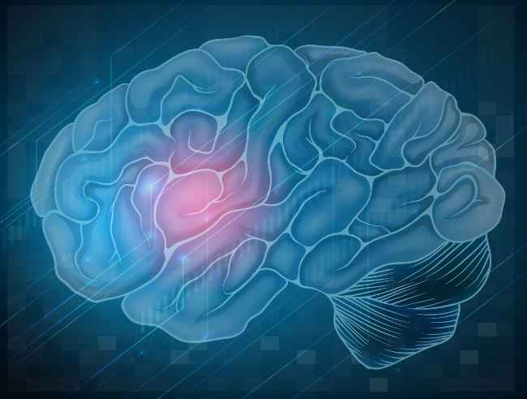

STROKE
Stroke adalah kondisi yang terjadi ketika pasokan darah ke otak terputus akibat penyumbatan atau pecahnya pembuluh darah, sehingga terjadi kematian sel-sel pada sebagian area di otak. Stroke adalah kondisi kesehatan yang serius yang membutuhkan penanganan cepat.
Ketika pasokan darah yang membawa oksigen dan nutrisi ke otak terputus, maka sel-sel otak akan mulai mati. Karena itu semakin cepat penderita ditangani, kerusakan yang terjadi pun semakin kecil bahkan kematian bisa dihindari. Jika Anda merasakan serangan stroke atau melihat orang lain terserang stroke, segera hubungi rumah sakit untuk meminta ambulans.

Ingatlah gejala stroke berikut ini agar dapat melakukan tindakan yang tepat.
Segera hubungi rumah sakit jika Anda melihat gejala-gejala di atas.
Otak dapat berfungsi dengan baik jika pasokan oksigen dan nutrisi yang disediakan darah mengalir dengan baik. Jika pasokan darah terhambat, maka otak akan rusak, bahkan seseorang yang terkena stroke bisa meninggal.
Jenis stroke jika dilihat dari penyebabnya dibagi menjadi dua yaitu stroke iskemik dan stroke hemoragik. Stroke iskemik terjadi jika pasokan darah berhenti akibat gumpalan darah dan stroke hemoragik terjadi jika pembuluh darah yang memasok darah ke otak pecah.
Ada juga yang disebut TIA (Transient Ischemic Attack) atau stroke ringan. TIA terjadi ketika pasokan darah ke otak mengalami gangguan sesaat yang biasanya diawali dengan gejala pusing, penglihatan ganda, tubuh secara mendadak terasa lemas, dan sulit bicara.
Meski hanya sesaat, tetap harus ditangani secara serius. Karena hal ini biasanya merupakan peringatan akan datangnya serangan stroke berat.
Berdasarkan data Riset Kesehatan Dasar tahun 2013, terdapat sekitar 12 penderita stroke per 1000 penduduk Indonesia. Stroke juga merupakan penyakit pembunuh nomor satu di Indonesia.
Orang-orang yang usianya lebih dari 65 tahun paling berisiko terkena stroke. Namun dua puluh lima persen stroke terjadi pada orang-orang yang berusia di bawah 65 tahun, termasuk anak-anak.
Orang-orang yang merokok, kurang olah raga, dan memiliki pola makan yang buruk juga rentan terhadap stoke. Selain itu orang-orang yang sirkulasi darahnya terganggu akibat tekanan darah tinggi, kolesterol tinggi, detak jantung tidak teratur atau fibrilasi atrium, dan diabetes, juga lebih rentan terhadap stroke.
Stroke umumnya didiagnosis melalui tanda-tanda fisik, serta melalui foto atau pencitraan otak. Pencitraan otak gunanya untuk menentukan apakah stroke disebabkan oleh arteri yang tersumbat atau pembuluh darah yang pecah, adanya risiko serangan stroke iskemik, bagian otak mana yang terserang, dan seberapa parah stroke tersebut.
Pengobatan stroke tergantung dari jenisnya, stroke iskemik atau hemoragik. Pengobatan juga disesuaikan pada area otak mana stroke terjadi. Pada umumnya stroke diobati dengan obat-obatan, termasuk obat pencegahan untuk menurunkan tekanan darah, menurunkan tingkat kolesterol, dan menghilangkan pembekuan darah. Dalam beberapa kasus, operasi diperlukan untuk memperbaiki kerusakan yang disebabkan oleh stroke hemoragik atau menghilangkan lemak di arteri.
Stroke dapat berdampak pada kehidupan dan kesejahteraan Anda dalam berbagai aspek. Proses rehabilitasinya spesifik dan tergantung pada gejala yang Anda alami dan seberapa parah gejala tersebut. Sejumlah ahli dan spesialis bisa membantu. Diantaranya adalah, psikolog, ahli terapi okupasi, ahli terapi bicara, perawat dan dokter spesialis, serta fisioterapi.
Kerusakan akibat stroke bisa meluas dan berlangsung lama. Sebelum pulih seperti sedia kala, penderita harus melakukan rehabilitasi dalam periode panjang. Namun sebagian besar dari mereka tidak akan pernah pulih sepenuhnya.
Stroke dapat dicegah melalui penerapan pola hidup sehat. Risiko mengalami stroke akan berkurang jika Anda makan makanan sehat, berolahraga secara teratur, tidak merokok, dan minum alkohol sesuai takaran. Berusaha menurunkan tingkat kolesterol dan tekanan darah tinggi dengan obat-obatan juga bisa mengurangi risiko terkena stroke. Pada sebagian orang, obat-obatan untuk mencegah pembekuan darah serta obat untuk menjaga kadar normal gula darah juga penting untuk mencegah terjadinya stroke.
Stroke dapat menyebabkan munculnya berbagai komplikasi, dan beberapa diantaranya dapat membahayakan nyawa si penderita. Contoh dari komplikasi tersebut diantaranya adalah hidrosefalus atau tingginya produksi cairan serebrospinal, disfagia atau kesulitan menelan, dan trombosis vena dalam atau penggumpalan darah pada kaki.